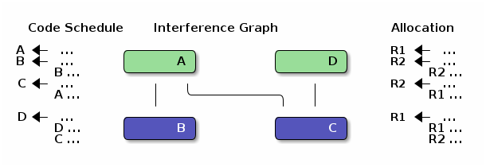
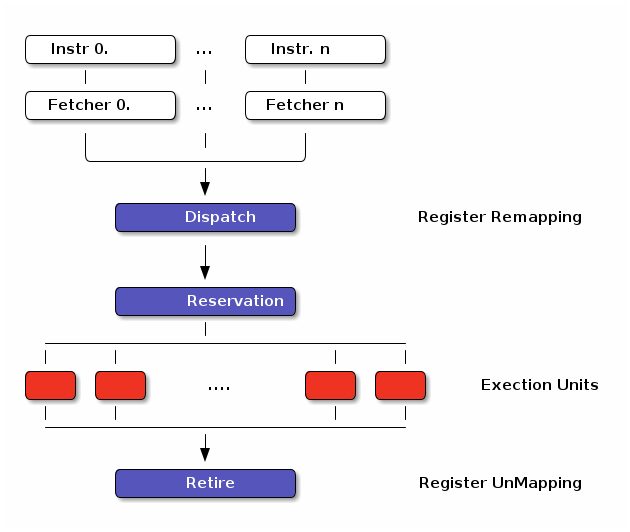

Figure 1: IBM MASS Library COS DAG on Z14 Architecture
Instruction execution can be broken into stages, the following pipeline uses four stages
Figure 2: Example Simple RISC Pipeline
Superscalar Architectures exploit Parallel Functional Units to execute multiple functions at once
Figure 3: Example SuperScalar Pipeline
When a Hazard occurs, a No Operation (NOOP) must be inserted, effectively Stalling the Pipeline
Figure 4: Example of a bubble (NOOP) being inserted to fix an unfullfilled data dependency
A scheduler attempts to maximize throughput (by avoiding pipeline stalls). The following different types of scheduling are worth noting:

Figure 5: Register Allocation via Graph Coloring
When Register Allocation fails, a spill must be inserted
After the operation defining v, insert
Before each operation that uses v, insert
Generally has a large performance deficit. A good schedular should consider register allocation to avoid spilling
| Step | In-Order | Out-Of-Order |
| 1. | Instruction fetch | Instruction fetch |
| 2. | Stall until all operands are available | Dispatch to a temporary queue known as Reservation Station |
| 3. | Dispatch to appropriate functional unit | Wait in the reservation station until operands are available |
| 4. | Execute (on appropriate functional unit) | Issue once operands are available |
| 5. | Write back to register file | Execute (on appropriate functional unit) |
| 6. | Retire results to another temporary queue | |
| 7. | Write results back to register files |
Used in most modern architectures, increases potential for ILP but further complicates scheduling considerations

Figure 6: Out-Of-Order Execution Control Flow
while there are instrs to be scheduled do
Identify highest priority instr n
Choose a processor p for n
Schedule n on p at est(n,p)
end
est(n,p) = earliest start time of n on p
| \(\color{darkblue}{\boldsymbol{R}}\) | any rewrite of the program |
| \(\color{darkblue}{\boldsymbol{T}}\) | the input program sequence |
| \(\color{darkblue}{\operatorname{eq}(\cdot)}\) | the equivalence function (0 if \(\color{darkblue}{R \equiv T}\) ) |
| \(\color{darkblue}{\operatorname{perf}(\cdot)}\) | a metric for performance |
| \(\color{darkblue}{\boldsymbol{w_e}}\) | weight for the equivalence term |
| \(\color{darkblue}{\boldsymbol{w_p}}\) | weight for the performance term |
NOTE: dispatch and completion times are designed to model OoO (Out of Order) execution machines
Key Idea: Encode choice heuristics as penalties, adjust preference between heuristics by scaling
\[ S(x) = \frac{1}{(1 + e^{s(-0.5 + v)})(1 + e^{s(-0.5-v)})} \]
Different categories of heuristics can be formed by